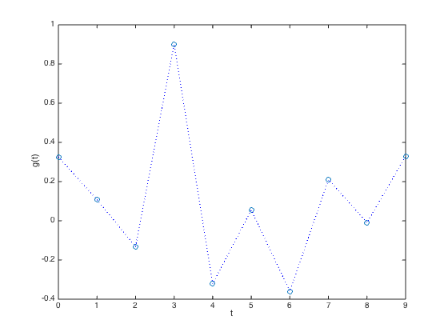
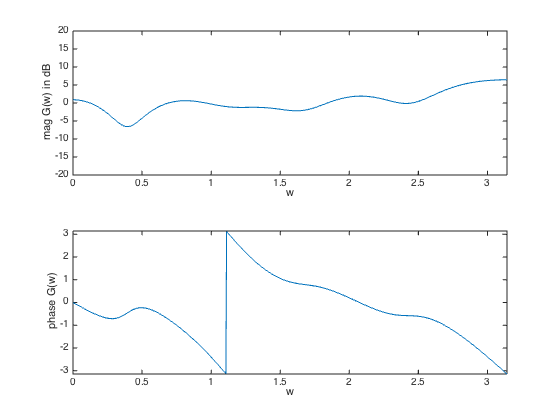
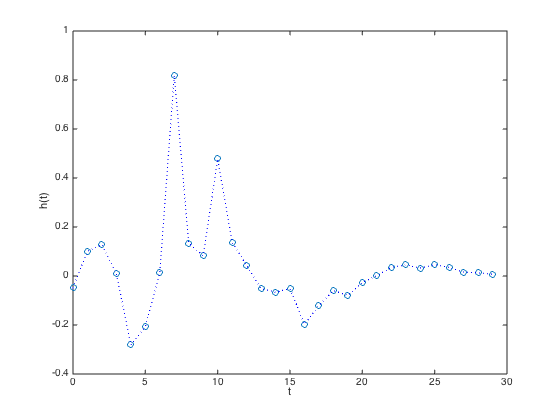
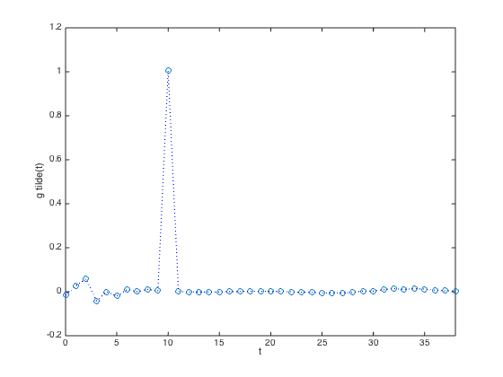
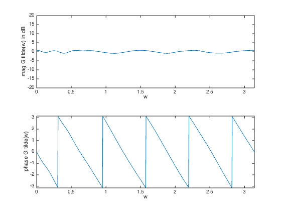
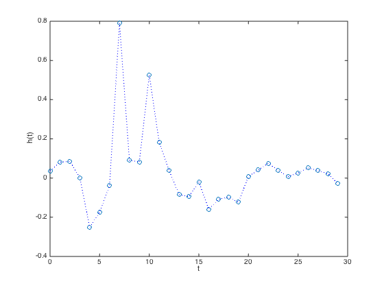
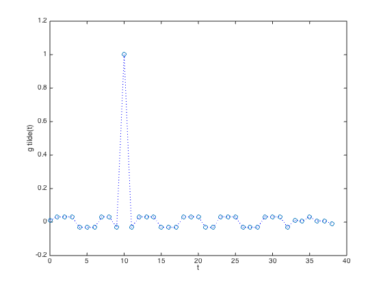
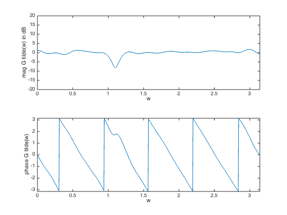

% "Filter design" lecture notes (EE364) by S. Boyd % (figures are generated) % % Designs a frequency-domain and time-domain FIR equalizer for % a single-input single-output (SISO) channel. % % Frequency-domain equalization uses a Chebychev criteria and % is specified in terms of frequency response functions. % It is a convex problem (which can be formulated as an SOCP): % % minimize max |G(w)H(w) - G_des(w)| for w in [0,pi] % % where H is the frequency response function and our variable % is the filter impulse response h. Function G is the unequalized % frequency response and G_des is the desired freq response. % % Time-domain equalization immediately designs the impulse % response function by specifying the problem in time (it's an LP): % % minimize max_{t neq D} |g_tilde(t)| % s.t. g_tilde(D) = 1 % % where g_tilde is the impulse response of equalized system, % and D is the delay of the system. % % Written for CVX by Almir Mutapcic 02/02/06 %******************************************************************** % problem specs %******************************************************************** % sample channel with impulse response g g =.5*[ 0.6526; 0.2157; -0.2639; 1.8024; -0.6430; ... 0.1096; -0.7190; 0.4206; -0.0193; 0.6603;]; % problem parameters n = 30; % filter order D = 10; % overall delay %******************************************************************** % frequency domain equalization %******************************************************************** % number of freq samples (rule-of-thumb) m = 15*(length(g) + n); w = linspace(0,pi,m)'; G = exp( -j*kron(w,[0:length(g)-1]) )*g; A = exp( -j*kron(w,[0:n-1]) ); % desired frequency response is a pure delay (equalized channel) Gdes = exp(-j*D*w); % formulate and solve the Chebyshev design problem cvx_begin variable hf(n,1) minimize( max( abs( G.*(A*hf) - Gdes ) ) ) cvx_end % check if problem was successfully solved disp(['Frequency equalization problem is ' cvx_status]) if ~strfind(cvx_status,'Solved') return end %******************************************************************** % time-domain equalization %******************************************************************** % define the convolution matrix Tconv = toeplitz([g; zeros(n-1,1)],[g(1) zeros(1,n-1)]); % create array of all times without t=D times_not_D = [1:D D+2:size(Tconv,1)]; % formulate and solve the time equalization problem cvx_begin variable t variable ht(n,1) minimize( max( abs( Tconv(times_not_D,:)*ht ) ) ) subject to Tconv(D+1,:)*ht == 1; cvx_end % check if problem was successfully solved if ~strfind(cvx_status,'Solved') disp(['Frequency equalization problem is ' cvx_status]) return end %******************************************************************** % equalizer plots %******************************************************************** % plot g figure(1) plot([0:length(g)-1],g,'o',[0:length(g)-1],g,'b:') xlabel('t') ylabel('g(t)') figure(2) H = exp(-j*kron(w,[0:length(g)-1]))*g; % magnitude subplot(2,1,1); plot(w,20*log10(abs(H))) axis([0,pi,-20,20]) xlabel('w') ylabel('mag G(w) in dB') % phase subplot(2,1,2) plot(w,angle(H)) axis([0,pi,-pi,pi]) xlabel('w') ylabel('phase G(w)') % freq equalizer figure(3) plot([0:n-1],hf,'o',[0:n-1],hf,'b:') xlabel('t') ylabel('h(t)') % plot g_tilde figure(4) gt=conv(g,hf); plot([1:length(gt)]-1,gt,'o',[1:length(gt)]-1,gt,'b:') xlabel('t') ylabel('g tilde(t)') axis([0,length(gt)-1,-.2 1.2]) figure(5) H = exp(-j*kron(w,[0:length(gt)-1]))*gt; % amplitude subplot(2,1,1) plot(w,20*log10(abs(H))) axis([0,pi,-20,20]) xlabel('w') ylabel('mag G tilde(w) in dB') % phase subplot(2,1,2) plot(w,angle(H)) axis([0,pi,-pi,pi]) xlabel('w') ylabel('phase G tilde(w)') % time equalizer figure(6) plot([0:n-1],ht,'o',[0:n-1],ht,'b:') xlabel('t') ylabel('h(t)') % plot g_tilde figure(7) gt=conv(g,ht); plot([1:length(gt)]-1,gt,'o',[1:length(gt)]-1,gt,'b:') xlabel('t') ylabel('g tilde(t)') figure(8) H = exp(-j*kron(w,[0:length(gt)-1]))*gt; % magnitude subplot(2,1,1) plot(w,20*log10(abs(H))) axis([0,pi,-20,20]) xlabel('w') ylabel('mag G tilde(w) in dB') % phase subplot(2,1,2) plot(w,angle(H)) axis([0,pi,-pi,pi]) xlabel('w') ylabel('phase G tilde(w)')
Calling SDPT3 4.0: 2399 variables, 631 equality constraints
For improved efficiency, SDPT3 is solving the dual problem.
------------------------------------------------------------
num. of constraints = 631
dim. of socp var = 1799, num. of socp blk = 600
dim. of linear var = 600
*******************************************************************
SDPT3: Infeasible path-following algorithms
*******************************************************************
version predcorr gam expon scale_data
NT 1 0.000 1 0
it pstep dstep pinfeas dinfeas gap prim-obj dual-obj cputime
-------------------------------------------------------------------
0|0.000|0.000|7.8e+02|3.7e+01|7.5e+05| 0.000000e+00 0.000000e+00| 0:0:00| spchol 1 1
1|0.989|1.000|8.7e+00|3.0e-01|8.5e+03|-3.635757e-04 -5.334109e+01| 0:0:00| spchol 1 1
2|0.992|1.000|7.2e-02|3.0e-02|1.2e+02|-2.173366e-04 -4.914174e+01| 0:0:00| spchol 1 1
3|1.000|0.965|3.0e-08|1.8e-02|1.5e+01|-5.912687e-04 -1.467789e+01| 0:0:00| spchol 1 1
4|1.000|0.980|7.7e-08|6.6e-04|6.4e-01|-9.021888e-03 -6.523602e-01| 0:0:00| spchol 1 1
5|1.000|0.903|2.2e-10|9.1e-05|1.5e-01|-4.742632e-02 -1.993335e-01| 0:0:00| spchol 1 1
6|0.804|0.900|6.8e-11|1.2e-05|4.9e-02|-7.637134e-02 -1.248551e-01| 0:0:00| spchol 1 1
7|0.863|0.862|1.8e-11|1.9e-06|1.7e-02|-8.909373e-02 -1.056027e-01| 0:0:00| spchol 1 1
8|0.618|0.883|9.7e-12|2.5e-07|7.5e-03|-9.138156e-02 -9.887881e-02| 0:0:00| spchol 1 1
9|0.848|0.841|2.9e-12|4.2e-08|2.4e-03|-9.457908e-02 -9.694645e-02| 0:0:00| spchol 1 1
10|0.732|0.790|7.8e-13|9.0e-09|9.2e-04|-9.566043e-02 -9.657738e-02| 0:0:00| spchol 1 1
11|0.767|0.868|1.7e-13|1.2e-09|3.2e-04|-9.613059e-02 -9.645521e-02| 0:0:00| spchol 1 1
12|0.600|0.866|1.0e-13|1.7e-10|1.6e-04|-9.627950e-02 -9.643566e-02| 0:0:00| spchol 1 1
13|0.842|0.802|1.7e-13|3.4e-11|4.7e-05|-9.638279e-02 -9.642973e-02| 0:0:00| spchol 1 1
14|0.915|0.884|7.4e-13|5.0e-12|1.2e-05|-9.641486e-02 -9.642702e-02| 0:0:00| spchol 1 1
15|0.892|0.910|4.5e-12|1.5e-12|3.2e-06|-9.642317e-02 -9.642642e-02| 0:0:00| spchol 1 1
16|1.000|0.900|2.9e-11|1.1e-12|7.3e-07|-9.642559e-02 -9.642632e-02| 0:0:00| spchol 1 1
17|0.634|1.000|1.4e-11|1.5e-12|3.7e-07|-9.642592e-02 -9.642629e-02| 0:0:00| spchol 2 2
18|0.632|1.000|5.4e-12|2.2e-12|2.0e-07|-9.642609e-02 -9.642628e-02| 0:0:00| spchol 2 2
19|0.631|1.000|2.2e-12|1.1e-12|1.0e-07|-9.642618e-02 -9.642628e-02| 0:0:00| spchol 2 2
20|0.630|1.000|9.3e-13|1.0e-12|5.5e-08|-9.642623e-02 -9.642628e-02| 0:0:01| spchol 2 2
21|0.630|1.000|5.7e-13|1.0e-12|2.9e-08|-9.642625e-02 -9.642628e-02| 0:0:01| spchol 2 2
22|0.630|1.000|9.4e-13|1.0e-12|1.6e-08|-9.642627e-02 -9.642628e-02| 0:0:01|
stop: max(relative gap, infeasibilities) < 1.49e-08
-------------------------------------------------------------------
number of iterations = 22
primal objective value = -9.64262664e-02
dual objective value = -9.64262819e-02
gap := trace(XZ) = 1.55e-08
relative gap = 1.30e-08
actual relative gap = 1.30e-08
rel. primal infeas (scaled problem) = 9.42e-13
rel. dual " " " = 1.00e-12
rel. primal infeas (unscaled problem) = 0.00e+00
rel. dual " " " = 0.00e+00
norm(X), norm(y), norm(Z) = 4.5e-01, 1.1e+00, 3.1e+00
norm(A), norm(b), norm(C) = 1.6e+02, 2.0e+00, 2.5e+01
Total CPU time (secs) = 0.56
CPU time per iteration = 0.03
termination code = 0
DIMACS: 9.4e-13 0.0e+00 1.3e-11 0.0e+00 1.3e-08 1.3e-08
-------------------------------------------------------------------
------------------------------------------------------------
Status: Solved
Optimal value (cvx_optval): +0.0964263
Frequency equalization problem is Solved
Calling SDPT3 4.0: 115 variables, 69 equality constraints
For improved efficiency, SDPT3 is solving the dual problem.
------------------------------------------------------------
num. of constraints = 69
dim. of socp var = 76, num. of socp blk = 38
dim. of linear var = 38
dim. of free var = 1 *** convert ublk to lblk
*******************************************************************
SDPT3: Infeasible path-following algorithms
*******************************************************************
version predcorr gam expon scale_data
NT 1 0.000 1 0
it pstep dstep pinfeas dinfeas gap prim-obj dual-obj cputime
-------------------------------------------------------------------
0|0.000|0.000|4.3e+01|3.1e+01|5.1e+03|-2.875957e-10 0.000000e+00| 0:0:00| chol 1 1
1|0.991|0.997|3.7e-01|1.9e-01|6.0e+01|-3.887619e-05 -1.675519e+01| 0:0:00| chol 1 1
2|1.000|1.000|2.3e-06|1.0e-02|7.1e+00|-5.921279e-05 -7.133539e+00| 0:0:00| chol 1 1
3|1.000|0.927|2.1e-06|1.7e-03|5.2e-01|-4.256779e-04 -5.244360e-01| 0:0:00| chol 1 1
4|1.000|0.621|8.9e-08|6.9e-04|2.9e-01|-3.431814e-03 -2.948764e-01| 0:0:00| chol 1 1
5|1.000|0.653|3.0e-06|2.5e-04|1.1e-01|-5.054215e-03 -1.145055e-01| 0:0:00| chol 1 1
6|0.789|0.110|8.2e-07|2.2e-04|9.8e-02|-8.682875e-03 -1.064118e-01| 0:0:00| chol 1 1
7|1.000|0.427|6.7e-08|1.3e-04|6.4e-02|-1.319024e-02 -7.711662e-02| 0:0:00| chol 1 1
8|1.000|0.318|4.7e-08|8.7e-05|4.4e-02|-2.027235e-02 -6.414836e-02| 0:0:00| chol 1 1
9|0.947|0.358|2.2e-08|5.6e-05|2.8e-02|-2.545798e-02 -5.375728e-02| 0:0:00| chol 1 1
10|1.000|0.397|5.3e-09|3.4e-05|1.7e-02|-2.887232e-02 -4.576860e-02| 0:0:00| chol 1 1
11|0.883|0.372|2.2e-09|2.1e-05|1.1e-02|-3.006465e-02 -4.091988e-02| 0:0:00| chol 1 1
12|1.000|0.328|5.0e-10|3.1e-05|7.5e-03|-3.070573e-02 -3.809963e-02| 0:0:00| chol 1 1
13|1.000|0.952|7.6e-12|1.9e-05|1.1e-03|-3.119385e-02 -3.226084e-02| 0:0:00| chol 1 1
14|1.000|0.952|4.0e-13|2.7e-06|2.7e-04|-3.149725e-02 -3.176926e-02| 0:0:00| chol 1 1
15|0.908|0.850|1.2e-12|6.9e-07|7.4e-05|-3.159564e-02 -3.166914e-02| 0:0:00| chol 1 1
16|0.914|0.886|1.4e-12|1.9e-07|1.7e-05|-3.161825e-02 -3.163562e-02| 0:0:00| chol 1 1
17|1.000|0.907|1.8e-12|4.4e-08|3.3e-06|-3.162393e-02 -3.162722e-02| 0:0:00| chol 1 1
18|1.000|0.973|2.8e-13|8.3e-09|3.8e-07|-3.162491e-02 -3.162529e-02| 0:0:00| chol 1 1
19|1.000|0.971|1.1e-13|9.6e-10|4.2e-08|-3.162503e-02 -3.162508e-02| 0:0:00| chol 1 1
20|1.000|0.988|1.4e-14|1.1e-10|8.4e-10|-3.162505e-02 -3.162505e-02| 0:0:00|
stop: max(relative gap, infeasibilities) < 1.49e-08
-------------------------------------------------------------------
number of iterations = 20
primal objective value = -3.16250485e-02
dual objective value = -3.16250493e-02
gap := trace(XZ) = 8.39e-10
relative gap = 7.89e-10
actual relative gap = 7.83e-10
rel. primal infeas (scaled problem) = 1.38e-14
rel. dual " " " = 1.05e-10
rel. primal infeas (unscaled problem) = 0.00e+00
rel. dual " " " = 0.00e+00
norm(X), norm(y), norm(Z) = 9.4e-01, 1.1e+00, 2.6e-01
norm(A), norm(b), norm(C) = 1.4e+01, 2.0e+00, 2.4e+00
Total CPU time (secs) = 0.28
CPU time per iteration = 0.01
termination code = 0
DIMACS: 1.4e-14 0.0e+00 1.3e-10 0.0e+00 7.8e-10 7.9e-10
-------------------------------------------------------------------
------------------------------------------------------------
Status: Solved
Optimal value (cvx_optval): +0.031625
       